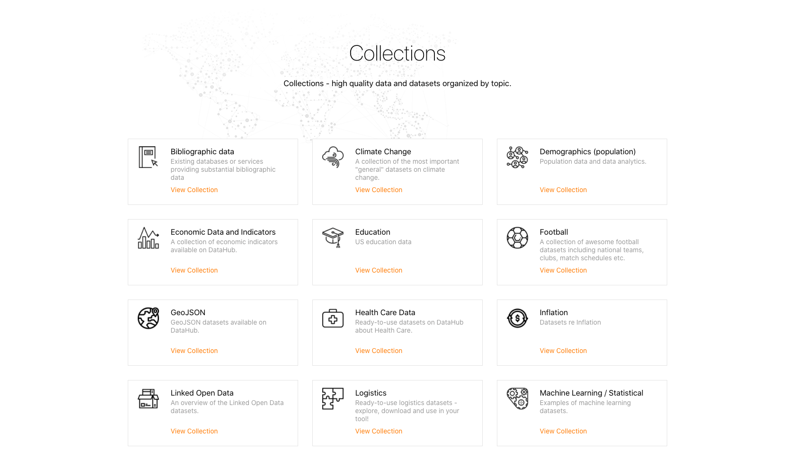
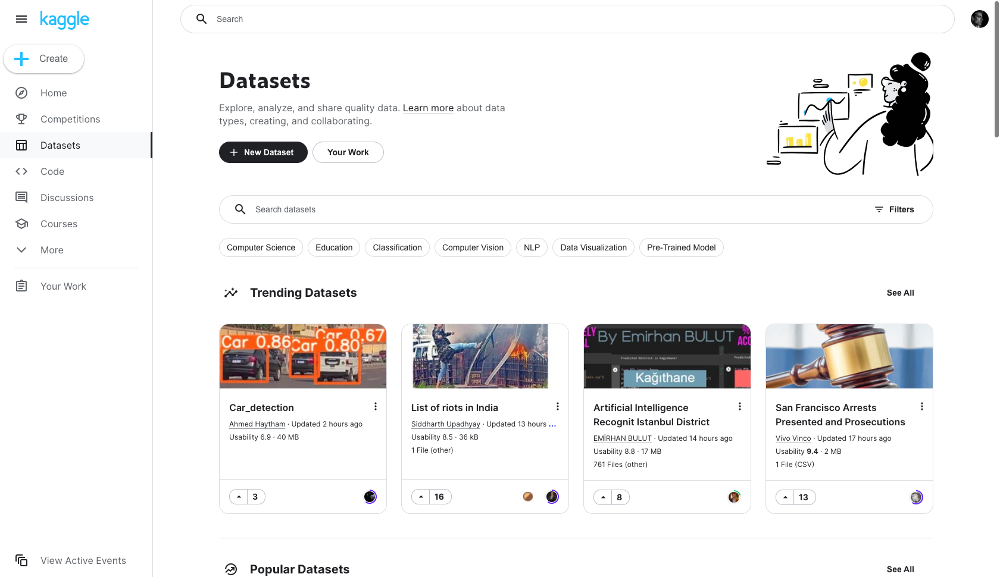
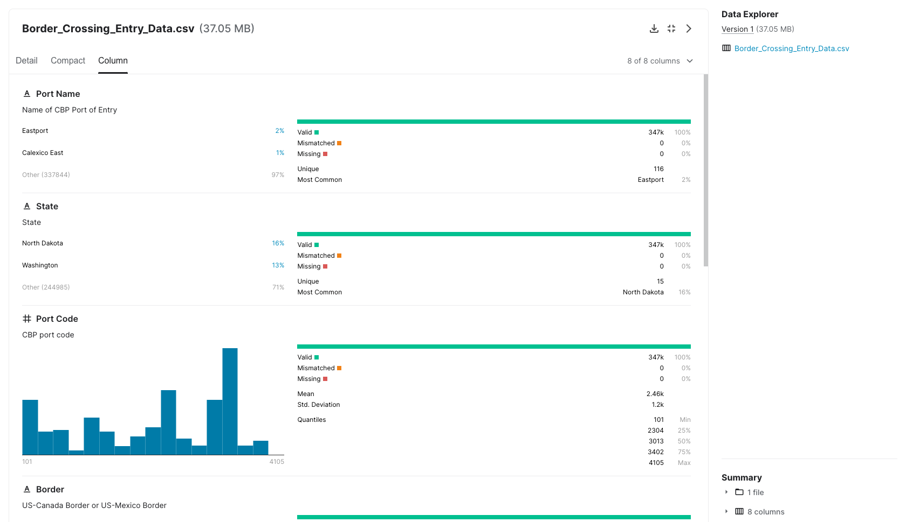

Dove trovare buoni esempi di dati in CSV
Quella che segue è la descrizione di due iniziative che pubblicano set di dati aperti, di elevata qualità, disponibili in formato CSV:
In queste piattaforme è rilevante la qualità con cui i dati vengono pubblicati, data la forte comprensione della natura multi-scopo dell'uso dei dati e il trattamento professionale dei dati che è al centro di entrambe le iniziative.
Datahub, si distingue per l'implementazione di un supporto completo per la trasformazione, la convalida e la pubblicazione di dati di qualità e Kaggle è una delle più importanti risorse di set di dati e conoscenze che effettuano una analisi professionale dei dati di riferimento.
Entrambe le iniziative sono esempi di buone pratiche nel trattamento dei file CSV che possono essere presi in considerazione quando si tratta di processi di preparazione e pubblicazione di Open Data.
Datahub.io¶
Datahub è una piattaforma web-based che supporta flussi di lavoro end-to-end per la preparazione e la pubblicazione di Open Data. È progettato per preparare, catalogare e pubblicare dati di alta qualità utilizzando il toolkit Frictionless Data.
Il Frictionless Data toolbox1 è una raccolta di specifiche e applicazioni per la preparazione di file di dati, incluse le Goodtables, descritte nel capitolo Cassetta degli attrezzi per i file CSV di questa guida. Datahub contiene collezioni di dati di alto valore conformi agli Open Data, come: cambiamenti climatici, dati e indicatori economici, statistiche, logistica, documenti aziendali provenienti da fonti ufficiali.
Ogni voce di dati disponibile contiene una serie di elementi per visualizzare le proprietà del dataset (schema e risorse di dati), opzioni per scaricare i dati in vari formati tra cui CSV, viste delle tabelle di dati e semplici visualizzazioni. Fornisce anche un accesso diretto ai dati di importazione utilizzando una varietà di strumenti comunemente usati nel contesto professionale: R, Python, JavaScript e SQL.

Un esempio di un set di dati CSV disponibile sulla piattaforma è quello che mostra l'andamento dell'anidride carbonica nell'atmosfera, proveniente dall'Earth System Research Laboratory del governo statunitense.
Il file CSV (visualizzato sopra) scaricabile del dataset "CO2 PPM - Trends in Atmospheric Carbon Dioxide" ha le seguenti caratteristiche:
- dizionario di dati elaborabile in formato
JSONsecondo la specifica Data Package; - riga di intestazione singola;
- singolo record per riga;
- denominazione comprensibile delle colonne;
- struttura dati verticale;
- trattamento dei valori sconosciuti, indicati da valori di tipo -99,99 (per l'attributo
media) e -1 (per l'attributogiorni); - non contiene alcun totale o raggruppamenti;
- corretta digitazione dei campi;
- campo data codificato secondo lo standard ISO- 8601;
- non contiene dati con coordinate geografiche o campi codificati.
Kaggle¶
Kaggle è una piattaforma web in cui aziende e istituzioni propongono problemi strategici o di business in modo che gruppi con interesse o esperienza nell'analisi dei dati competano, a pagamento, per creare e proporre le migliori soluzioni.
La piattaforma presenta qualsiasi tipo di problema da risolvere che può essere trovato in diversi domini del mondo reale, come ad esempio i servizi finanziari, l'energia, la società e la tecnologia dell'informazione. Oltre alle competizioni proposte e alla disponibilità di risorse di codice per analizzare qualsiasi set di dati, Kaggle ospita centinaia di set di dati di tutti i tipi e dimensioni che possono essere scaricati e utilizzati gratuitamente, per lo più in formato CSV. Ogni set di dati contiene una descrizione dettagliata del suo contenuto e ha un'anteprima del contenuto del file tramite un esploratore di dati.

I file includono la specifica dello schema di dati associato, comprese le descrizioni delle colonne con i loro metadati corrispondenti: tipi di dati, gamma di valori, unità e istogramma. Le descrizioni sono assegnate a livello di tabella e a livello di singola colonna per una facile comprensione. Ogni dataset è anche valutato dalla comunità di utenti per il suo grado di usabilità basato su aspetti come la facilità di comprensione del contenuto attraverso la qualità dei descrittori essenziali: file, colonna, tag, licenza, provenienza e frequenza di aggiornamento. Un esempio è il set di dati che contiene i dati di ingresso dei passaggi di frontiera dal "Bureau of Transportation Statistics" (BTS) degli Stati Uniti.

| nome_porto | stato | codice_porto | confine | data | misura | valore | posizione |
|---|---|---|---|---|---|---|---|
| Calexico East | California | 2507 | US-Mexico Border | 03/01/2019 12:00:00 AM | Trucks | 34447 | POINT (- 115.48433000000001 32.67524) |
| Van Buren | Maine | 108 | Confine USA-Canada | 03/01/2019 12:00:00 AM | Contenitori ferroviari pieni | 428 | POINT (- 67.94271 47.16207) |
| Otay Mesa | California | 2506 | US-Mexico Border | 03/01/2019 12:00:00 AM | Trucks | 81217 | POINT (- 117.05333 32.57333) |
| Nogales | Arizona | 2604 | Confine USA-Messico | 03/01/2019 12:00:00 AM | Treni | 62 | POINT (-110.93361 31.340279999999996) |
| Trout River | New York | 715 | US-Canada Border | 03/01/2019 12:00:00 AM | Passeggeri di veicoli personali | 16377 | POINT (-73.44253 44.990010000000005) |
| Madawaska | Maine | 109 | Confine USA-Canada | 03/01/2019 12:00:00 AM | Camion | 179 | POINT (-68.3271 47.35446) |
| Pembina | North Dakota | 3401 | US-Canada Border | 03/01/2019 12:00:00 AM | Bus Passengers | 1054 | POINT (-97.24333 48.96639) |
| Progreso | Texas | 2309 | US-Mexico Border | 03/01/2019 12:00:00 AM | Truck Containers Empty | 1808 | POINT (-97.94889 26.061670000000003) |
| Portal | North Dakota | 3403 | US-Canada Border | 03/01/2019 12:00:00 AM | Rail Containers Empty | 6685 | POINT (-102.54917 48.99583) |
| Champlain-Rouses Point | New York | 712 | Confine USA-Canada | 03/01/2019 12:00:00 AM | Trucks | 24759 | POINT (-73.44694 44.98639) |
| Opheim | Montana | 3317 | Confine USA-Canada | 03/01/2019 12:00:00 AM | Veicoli personali | 235 | POINT (- 106.40265 48.85574) |
Il file CSV (visibile sopra) scaricabile del set di dati "Border crossing entry data" ha le seguenti caratteristiche:
- dizionario dei dati specificato in forma di tabella ma non elaborabile automaticamente, un possibile miglioramento sarebbe fornirlo in formato
JSONdirettamente in fase di download; - riga di intestazione singola;
- singolo record per riga;
- denominazione comprensibile delle colonne;
- struttura dati verticale;
- non contiene totali o raggruppamenti;
- corretta digitazione dei campi;
- campo data codificato secondo lo standard ISO-8601;
- codifica dei porti;
- coordinate geografiche in gradi decimali indicate come punto geografico di latitudine-longitudine.